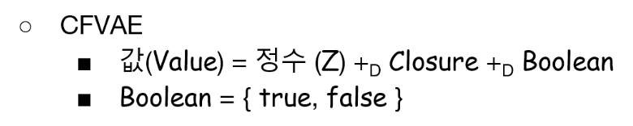
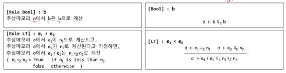
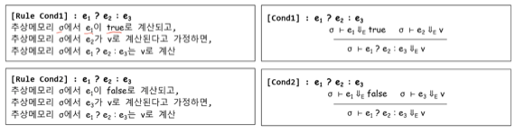
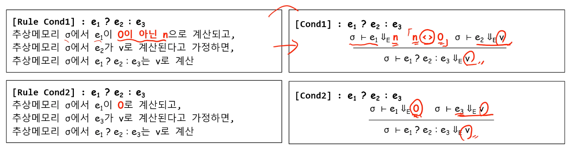
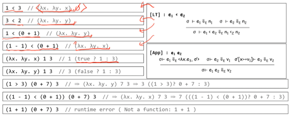

충남대학교 컴퓨터공학과 이성호 교수님의 "프로그래밍 언어 개론" 강의를 필기한 내용입니다.
강의를 듣고 필기한 내용이기에, 다소 잘못된 부분과
부적절한 언행이 포함되어 있을 수 있습니다.
Expression vs Statement
- 얘네 둘의 구분은 언어마다 다르다
- 다만 보편적으로는 결과값이 나오는 코드 조각을 Expression이라고 하고 값으로 계산되지 않고 프로그램의 상태가 전이되는 코드 조각을 Statement라고 한다
- 당연히 Expression의 경우에는 상태가 전이되지 않것제?
- 대부분의 함수형 언어는 Expression만 지원하고
- c언어같은 imperative언어는 Statement도 지원한다
- 그리고 자바스크립트같은 애들은 함수형도 지원하고 imperative도 지원하기 때문에 둘 다 지원함
- 여기서 상태가 전이된다는 것은 변수에 값을 추가하는 것 처럼 추상메모리가 변화하는 것 을 의미한다
- 분기문의 경우 값이 계산되지 않기 때문에 statement이다. 다만, 삼항연산자의 경우에는 값이 계산되기 때문에 분기문의 expression 버전이다
CFVAE
- FVAE에 분기문을 추가한 버젼
- 수업에서는 오른쪽화살표S 가 statement를 나타내며 (구 store, expression, 업데이트된 store) 의 튜플 과 같다
- 그리고 얘는 함수형 언어이기 때문에 분기문도 expression으로 지원 한다. 즉, 분기문이 참일때의 값과 거짓일때의 값으로 계산된다는 것 이다
Concrete Syntax

- 분기문 if then else와
- 조건식 <
- 그리고 boolean값인 “true”, “false”를 추가함
Abstract Syntax

- boolean값을 나타내는 b
- 분기문을 의미하는 e ? e : e (당연히 AST이기 때문에 삼항연산자를 나타내는건 아니다)
- 그리고 조건을 나타내는 < 가 추가된다
Value

- 조건식을 계산한 결과인 boolean값이 추가되었으므로 Value의 범위를 확장해준다
Bigstep Operational Sementics

- 뭐 별거 없다
- 정수간의 연산이랑 별다를거없음
- 당연히 <의 경우 e의 계산값이 정수가 아니라면 런타임 에러가 난다

- e1의 계산결과가 참이냐 거짓이냐에 따라서 계산결과가 e2의 결과(참일 경우), e3의 결과(거짓일 경우)로 나뉘기 때문에 두개의 rule로 정의를 한 것
- 마찬가지로 e1의 결과가 boolean이 아닌 경우에는 런타임 에러가 나는 것
Syntactic sugar
- boolean을 syntactic sugar를 이용해 0, 1로 표현하거나 0이아닌 정수, 0으로 표현하는 것도 가능 하다

- 위의 분기문이 C언어 스타일로 바꾼 것
- 0이 아닐때는 참으로 계산, 0일때는 거짓으로 계산된다
- 또한 boolean, 분기문을 함수로 표현하는것도 가능하다
- 참인 경우에는 인자 x, y를 받아 x를 돌려주는 함수로 표현, 거짓인 경우에는 인자로 x, y를 받아 y를 반환하는 함수로 표현
- 따라서 e1 ? e2 : e3 의 분기문을 e1 e2 e3의 function application으로 표현할 수도 있다
- 참과 거짓이 함수로 표현되므로 아래처럼 표현할 수 있다

- <의 결과가 함수로 나오므로
- e1 ? e2 : e3 의 경우에는 e1의 결과가 함수가 되어 인자인 e2, e3의 결과값에 e1의 결과인 함수를 application하는 것으로 처리하는 것이 가능하다
Boolean in Syntactic Sugar
- boolean값을 값의 도메인을 확장하지 않고 표현하기
- C언어 스타일 : 0과 1로 표현
- 함수형 언어의 스타일 : 참인 경우에는 인자 x, y를 받아 x를 돌려주는 함수로 표현, 거짓인 경우에는 인자로 x, y를 받아 y를 반환하는 함수로 표현